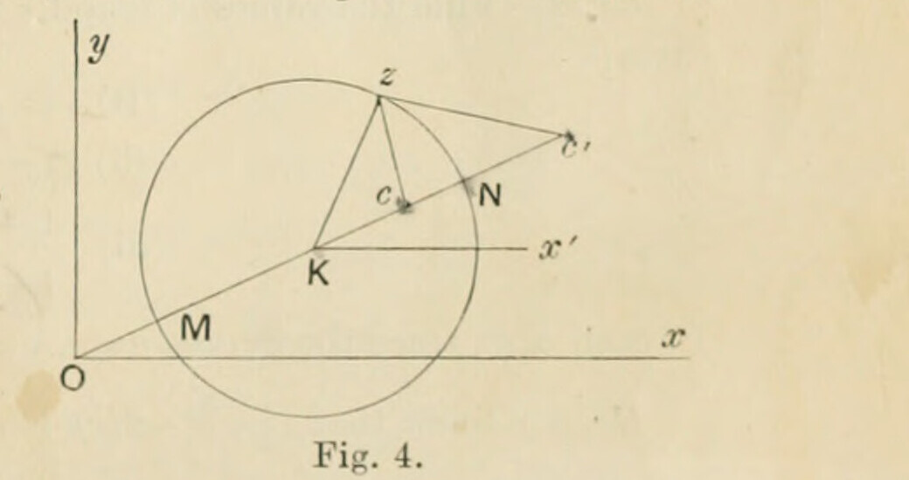

§11. Example of Riemann's definition
Printed pages 13–15 (scans 0041–0043). Mathematical notation has been transcribed as TeX; the wording follows the scan, with line wrapping normalized.
Conversely, when \(w\) is explicitly given as a function of \(z\) and it is divided into its real and its imaginary parts, these parts individually satisfy the foregoing conditions attaching to \(u\) and \(v\). Thus \(\log r\), where \(r\) is the distance of a point \(z\) from a point \(a\), is the real part of \(\log(z-a)\); it therefore satisfies the equation
Again, \(\phi\), the angular coordinate of \(z\) relative to the same point \(a\), is the real part of \(-i\log(z-a)\) and satisfies the same equation: the more usual form of \(\phi\) being \(\tan^{-1}\{(y-y_0)/(x-x_0)\}\), where \(a=x_0+iy_0\). Again, if a point \(z\) be distant \(r\) from \(a\) and \(r'\) from \(b\), then \(\log(r/r')\), being the real part of \(\log\{(z-a)/(z-b)\}\), is a solution of the same equation.
The following example, the result of which will be useful subsequently1, uses the property that the value of the derivative is independent of the differential element.
Consider a function
where \(c'\) is the inverse of \(c\) with regard to a circle, centre the origin \(O\) and radius \(R\). Then
so the curves, \(u=\text{constant}\), are circles. Let (fig. 4) \(Oc=r\), \(\angle xOc=a\), so that
then if
the values of \(\lambda\) for points in the interior of the circle of radius \(R\) vary from zero, when the circle \(u=\text{constant}\) is the point \(c\), to unity, when the circle \(u=\text{constant}\) is the circle of radius \(R\). Let the point \(K(=\theta e^{ai})\) be the centre of the circle determined by a value of \(\lambda\), and let its radius be \(\rho(=\tfrac12MN)\). Then since
we have
whence

Now if \(dn\) be an element of the normal drawn inwards at \(z\) to the circle \(NzM\), we have
where \(\psi(=\angle zKx')\) is the argument of \(z\) relative to the centre of the circle. Hence, since
we have
But
so that
and
and therefore
Hence, equating the real parts, it follows that
the differential element \(dn\) being drawn inwards from the circumference of the circle.
The application of this method is evidently effective when the curves \(u=\text{constant}\), arising from a functional expression of \(w\) in terms of \(z\), are a family of non-intersecting algebraical curves.
Ex. 1
Prove that, if \(z_1\) and \(z_2\) denote two complex variables,
Ex. 2
Find the values of \(u\) and \(v\) when \(w\) is defined as a function of \(z\) in the following cases:—
In each case, trace the curves \(u=a\), \(v=c\), regarded as loci in the plane of \(x\), \(y\).
Ex. 3
Show that \(x^2-y^2-2ixy\) is not a function of \(z\); and that
is a function of \(z\) only when \(a=0\).
Ex. 4
Show that a possible value of \(u\) is
and determine the associated value of \(w\) in terms of \(z\).
Determine also the value of \(w\) in terms of \(z\) when the preceding expression is the value of \(u-v\).
Ex. 5
Find the value of \(v\), and of \(w\) in terms of \(z\), when
Ex. 6
Prove that, when \(x\) and \(y\) are regarded as functions of \(u\) and \(v\) (with the foregoing notation), the relations
are satisfied.
Ex. 7
Show that, if \(A\) and \(B\) are any two fixed points in a plane; if \(P\) is any variable point \((x,y)\), and if \(\theta\) denotes the angle \(APB\), then
Construct the function of \(z\), \(=x+iy\), of which \(\theta\) is the real part, and also the function of \(z\) of which \(i\theta\) is the imaginary part.
Ex. 8
Given \(\lambda\), a function of \(x\) and \(y\); show that \(\phi(\lambda)\) can be the real part of a function of \(z\) if the quantity
is expressible in terms of \(\lambda\) alone.
Verify that the condition is satisfied when \(\lambda=x+(x^2+y^2)^{1/2}\); and obtain the function of \(z\) which has \(\phi(\lambda)\) for its real part.
- In §217, in connection with the investigations of Schwarz, by whom the result is stated, Ges. Werke, t. ii, p. 183. ↩